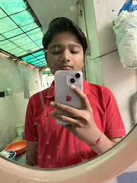

MANAV PATEL
Held and Protected

Profile
A relentless explorer to life's possibilities, I thrive on challenges and never back down. A devoted book enthusiast, public speaker, and social advocate, I embrace every oppurtunity to learn, grow and conquer.
Education
- Gujarat Public School - Class 11th and 12th (cbse)
Professional Experience
- Kanan International - Research Intern (GRE/SAT)
- Assisted in developing GRE/SAT test preparation materials, including study guides, practice questions and mock exams.
- Provided support to students and test-takers by offering guidance on effective study strategies and test-taking techniques
- Conducted data analysis on GRE/SAT test scores and performance metrices to identify trends and areas for improvement.
- BAPS Parivarik Shanti Abhyan
- I, under the leadership of my team leader Shreeji Vandan Swami had a conversation with several families of Padra and 2-3 nearby villages and taught them the morals and values given by HH Pramukh Swami Maharaj on bonding among the family members and did short pooja and aarti.
Skills
- Python
- HTML, CSS and Java
- Microsoft Excel, word & Power Point
- Public Speaking
- Ability to work under pressure
- Proficiency in English Speaking
Certifications
- Complete Web Development Bootcamp (Udemy)
- Complete Python Bootcamp
- Art of Conversation - Prakhar Gupta
Contact Information
- Phone - +91 9510817515
- Email - manav.patelmp10@gmail.com
- Address - 10, Narshinhnagar Society near old ST depot, Padra - 391440